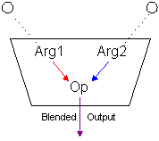
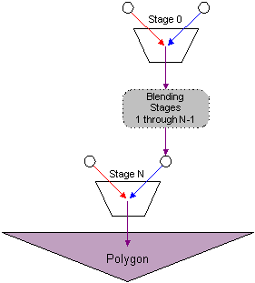

Direct3D can blend as many as eight textures onto primitives in a single pass. The use of multiple texture blending can profoundly increase the frame rate of a Direct3D application. An application employs multiple texture blending to apply textures, shadows, specular lighting, diffuse lighting, and other special effects in a single pass.
To use texture blending, your application should first check if the user's hardware supports it. This information is found in the TextureCaps member of the D3DCAPS9 structure. For details about how to query the user's hardware for texture blending capabilities, see IDirect3DDevice9::GetDeviceCaps.
Direct3D supports single-pass multiple texture blending through the use of texture stages. A texture stage takes two arguments and performs a blending operation on them, passing on the result for further processing or for rasterization. You can visualize a texture stage as shown in the following diagram.

As the preceding diagram shows, texture stages blend two arguments by using a specified operator. Common operations include simple modulation or addition of the color or alpha components of the arguments, but more than two dozen operations are supported. The arguments for a stage can be an associated texture, the iterated color or alpha (iterated during Gouraud shading), arbitrary color and alpha, or the result from the previous texture stage. For more information, see Texture Blending Operations and Arguments (Direct3D 9).
[!Note]
Direct3D distinguishes color blending from alpha blending. Applications set blending operations and arguments for color and alpha individually, and the results of those settings are independent of one another.
Â
The combination of arguments and operations used by multiple blending stages define a simple flow-based blending language. The results from one stage flow down to another stage, from that stage to the next, and so on. The concept of results flowing from stage to stage to eventually be rasterized on a polygon is often called the texture blending cascade. The following diagram shows how individual texture stages make up the texture blending cascade.

Each stage in a device has a zero-based index. Direct3D allows up to eight blending stages, although you should always check device capabilities to determine how many stages the current hardware supports. The first blending stage is at index 0, the second is at 1, and so on, up to index 7. The system blends stages in increasing index order.
Use only the number of stages you need; the unused blending stages are disabled by default. So, if your application only uses the first two stages, it need only set operations and arguments for stage 0 and 1. The system blends the two stages, and ignores the disabled stages.
[!Note]
If your application varies the number of stages it uses for different situations - such as four stages for some objects, and only two for others - you don't need to explicitly disable all previously used stages. One option is to disable the color operation for the first unused stage, then all stages with a higher index will not be applied. Another option is to disable texture mapping altogether by setting the color operation for the first texture stage (stage 0) to D3DTOP_DISABLE. A third option is when a texture stage has D3DTSS_COLORARG1 equal to D3DTA_TEXTURE and the texture pointer for the stage is NULL, this stage and all stages after it are not processed.
Â
Additional information is contained in the following topics.
Â
Â